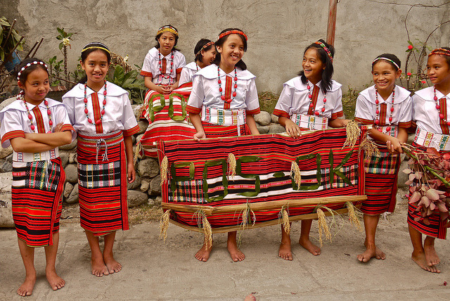
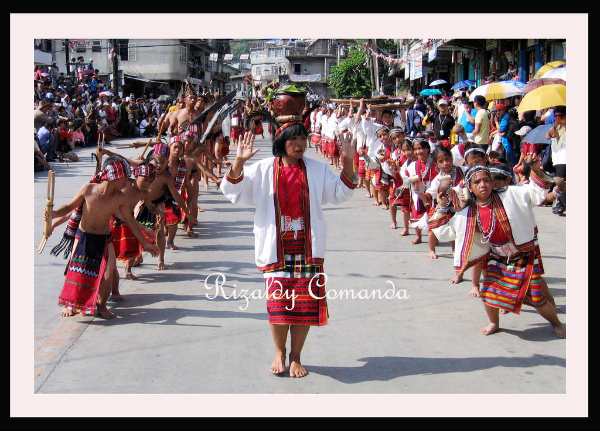
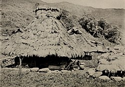
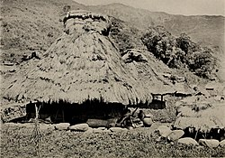

Wika
Ang mga wikang ginagamit ng tribong bontokay Bontok at Ilocano.Dagiti kangrunaan a pagsasao nga us-usaren dagiti tattao a Bontok ket ti Bontok ken Ilocano.
Lutuin
Ang pangunahing ani ng mga bontok ay bigas, at habang Dry season, kumakain sila ng kamote, at dawa pampalit sa bigas.Tradisyon
Isa sa mga malaking parte ng kanilang tradisyon ay ang Lang-ay festival, ang ibig-sabihin ng salitang "Lang-ay" ay "Sharing among the people", ang Lang-ay ay isang pista na ipinagdiriwang ang indiginous unity ng mga igorot. 

Tirahan
Ito ang karaniwang tirahan ng mga Bontok na tinatawag na "afung".Meron din silang tirahang ng lalaki lamang na tinatawag na "ator"
at tirahang pambabae lamang na tinatawag na "olog"
 
